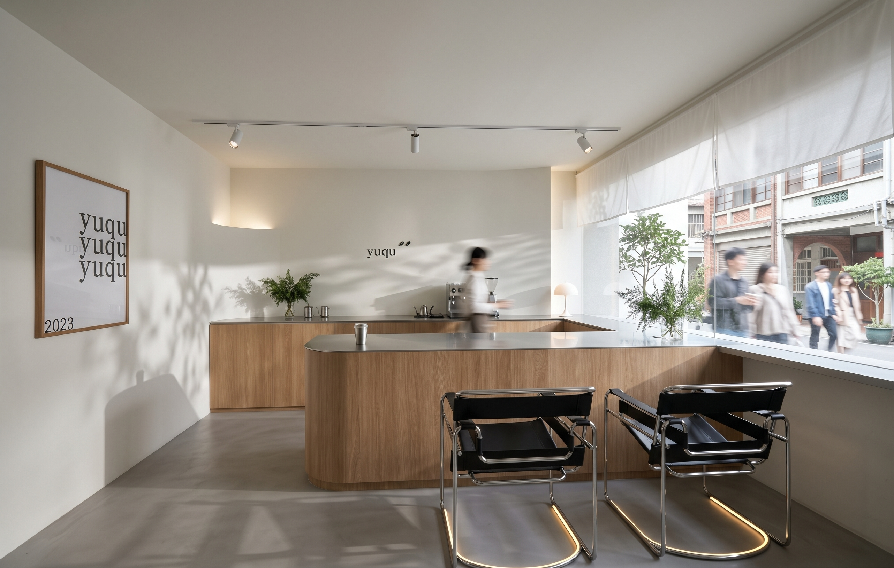
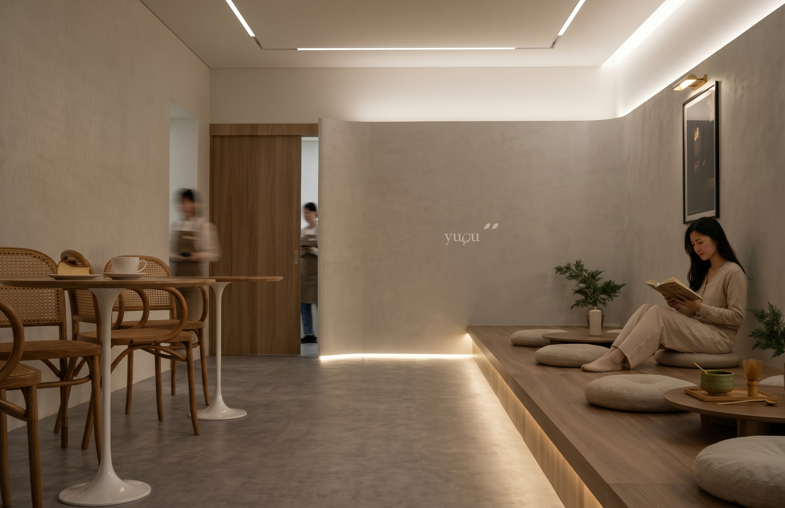
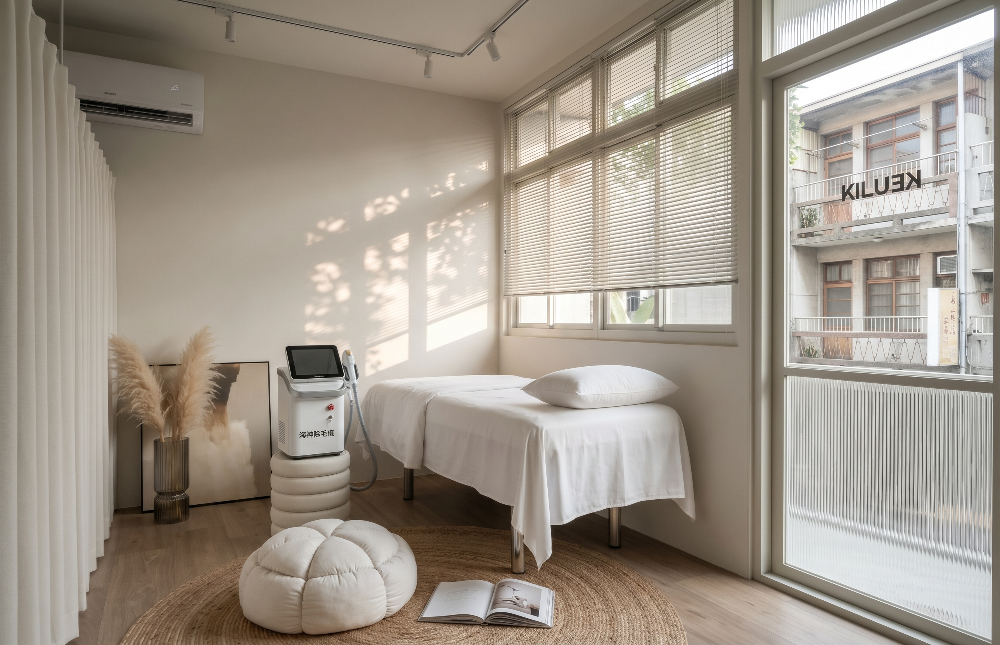
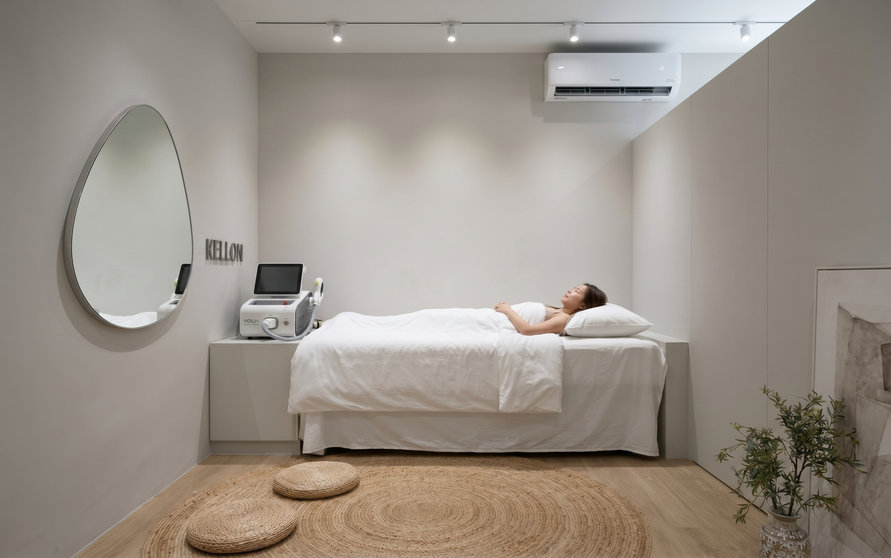
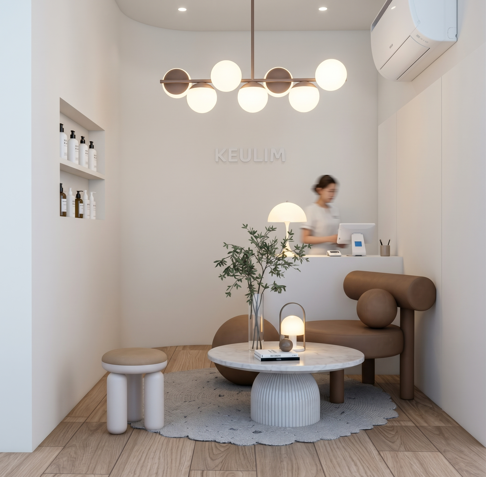

02 / COMPLETED PROJECT
Dual-Use
Heritage
Intervention
Transforming a structurally constrained, aging property into a dual-tenant commercial venue: a high-traffic ground-floor cafe and a serene, appointment-only salon on the first floor.
Taichung, Taiwan SECTOR
Commercial / Hospitality & Wellness AREA
130 sqm BUDGET
£37,500 STATUS
Completed October 2023 SCOPE
Concept design, contractor procurement & site supervision

03 / CONTEXT + CHALLENGE
One old house.
Two businesses.
The brief required a fast-paced hospitality environment and a privacy-driven wellness space to operate within one aging property.
The site was in a residential area, so the design had to address customer circulation, operational separation and noise transmission as well as appearance.
The original building also lacked the infrastructure required for modern commercial use. The project required a complete MEP overhaul and statutory approvals for a high-voltage supply upgrade.
04 / DESIGN RESPONSE
Vertical zoning
as separation.
The ground floor was dedicated to high-turnover hospitality. The first floor became an appointment-only salon, reached through a separate upward route.
The original staircase was repurposed as a spatial divider, directing salon clients upstairs and eliminating operational cross-overs between the two businesses.





05 / STRUCTURE + ACOUSTICS
Retain what works.
Strengthen what matters.
The existing building structure was used where possible to keep the intervention within a limited budget while maintaining a safe and robust commercial environment.
Non-load-bearing partitions were demolished to maximize the ground-floor open plan. Steel and timber framing were integrated to stabilize the heritage structure.
Robust acoustic insulation and considered material choices were used to reduce noise transmission to neighbouring residential properties.
06 / INFRASTRUCTURE + DELIVERY
From approval
to opening.
The project required more than an aesthetic response: it required coordination across infrastructure, procurement, construction and operation.
- Secured statutory approvals for high-load commercial equipment.
- Executed a full MEP rewiring with organized cable routing within a strict commercial timeline.
- Mapped service risers and spatial flows through 3D exploded axonometrics.
- Managed contractor procurement and site supervision through end-to-end delivery.
- Coordinated directly with the carpenter, deliveries and owner during the build.
07 / BUDGET + VALUE ENGINEERING
Infrastructure first.
Atmosphere through FF&E.
With a total budget of £37,500, capital was prioritised where it was essential to operation and compliance.
Investment went first to the MEP overhaul and high-power electrical upgrade. To build a warm, tactile cafe atmosphere cost-effectively, costly fixed joinery was replaced with layered ambient lighting, loose furniture and soft furnishings.
08 / MY ROLE
End-to-end
delivery.
Concept design, contractor procurement and site supervision from the initial spatial strategy through completion.
I developed the dual-use planning approach, coordinated the infrastructure response, supported statutory approval for the power upgrade, managed procurement and followed the work through delivery with the carpenter, suppliers and owner.
09 / OUTCOME
One building.
Clearer operations.
Completed in October 2023, the intervention enabled a cafe and an appointment-only salon to operate within one existing structure.
The final design separates high-traffic hospitality from privacy-focused wellness, preserves useful heritage structure, addresses commercial infrastructure and uses the available budget where it has the greatest operational value.